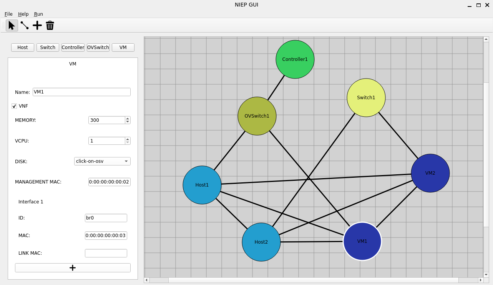

Sobre Mim
Me chamo Marcelo Gyovani Pereira e sou graduando do curso de Ciência da Computação da Universidade Federal do Paraná (UFPR). Sou um membro do laboratório de Segurança e Engenharia Reversa (SECRET) do Departamento de Informática. Tenho interesse na área de redes de computadores.
Tecnologias
- C
- C++
- Python
- Git
- Linux
Projetos
NIEPx
O NIEPx é uma interface gráfica desenvolvida para a definição e edição de topologias para o NFV Infrastructure Emulation Platform (NIEP), um emulador de redes com suporte a arquitetura NFV. O NIEPx é capaz de criar topologias de uma forma visual intuitiva, possibilitando a configuração, exportação e execução remote de topologias por meio de uma interface HTTP do NIEP.
Tecnologias: Python e Qt (PySide6)memalloc
O memalloc é um alocador de memória dinâmica desenvolvido puramente em Assembly AMD64 com uma API para utilizar em C. A estratégia de alocação do memalloc é first-fit, alocando memória no primeiro bloco livre encontrado ou expandindo a heap em caso de ausência de bloco livre grande o suficiente para a memória necessária.
Tecnologias: Assembly AMD64 (implementação) e C (testes e API)RawVideoServer
Esse projeto contém a implementação de um servidor e um cliente utilizando um protocolo próprio de camada de enlace baseado no protocolo Kermit para a transferência de arquivos, não somente vídeos. Foi implementado o ARQ para-e-espera para a comunicação básica das máquinas e o ARQ de janelas deslizantes para a transferência de arquivos. A conexão entre as máquinas deve ser feita diretamente com um cabo ethernet direto nas placas de rede, porque um switch ou roteador iria descartar os pacotes do protocolo de enlace personalizado.
Tecnologias: C e Raw SocketsArquivador Vina++
O Vina++ é um arquivador semelhante ao TAR. O Vina++ arquiva os arquivos desejados em um arquivo VPP, que contém um header no fim do arquivo que descreve os arquivos contidos no VPP, com nome, data, permissões e tamanho. O Vina++ permite a adição, remoção, atualização e movimentação de arquivos dentro do VPP. Além disso, o Vina realiza as operações com os arquivos de forma bufferizada, evitando o carregamento de arquivos massivos na memória principal.
Tecnologias: C